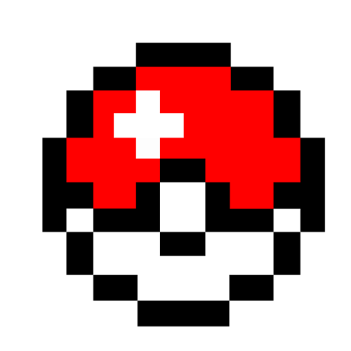

・ランダムでポケモンの鳴き声が選ばれ、
ボタンを押すと再生されます。
・収録鳴き声は、ジョウト地方から、
合計 100 匹 の ポケモンたちです。
---------- ---------- ---------- ----------
このポケモン、だ～れだ？

答え表示で新しいポケモンが選ばれます。
---------- ---------- ---------- ----------
・音声素材提供 : Games255 ポケモン鳴き声（なきごえ）全集
・ドット絵素材提供 : ポケモンイラスト大全
---------- ---------- ---------- ----------
・また、地方別での出題も可能です。